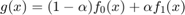
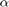
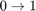
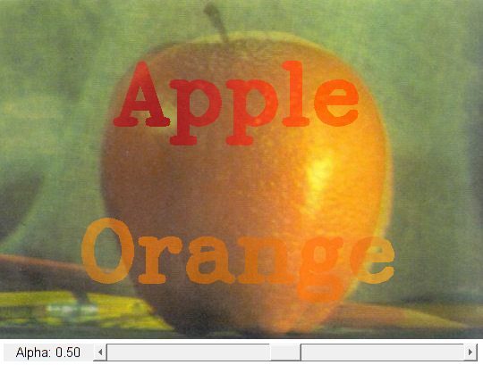

Image Blending
In this demo, we add two images using cv.addWeighted which defines a linear blend operator:

By varying  from  this operator can be used to perform a temporal cross-dissolve between two images or videos.
Sources:
- https://docs.opencv.org/3.2.0/d5/dc4/tutorial_adding_images.html
- https://docs.opencv.org/3.2.0/da/d6a/tutorial_trackbar.html
- https://docs.opencv.org/3.2.0/d0/d86/tutorial_py_image_arithmetics.html
- https://github.com/opencv/opencv/blob/3.2.0/samples/cpp/tutorial_code/core/AddingImages/AddingImages.cpp
- https://github.com/opencv/opencv/blob/3.2.0/samples/cpp/tutorial_code/HighGUI/AddingImagesTrackbar.cpp
function varargout = linear_blending_demo_gui(im1, im2) % load source images if nargin < 1 im1 = fullfile(mexopencv.root(),'test','apple.jpg'); img1 = cv.imread(im1, 'Color',true); img1 = drawText(img1, 'Apple', true, 'Color',[255 0 0]); elseif ischar(im1) img1 = cv.imread(im1, 'Color',true); else img1 = im1; end if nargin < 2 im2 = fullfile(mexopencv.root(),'test','orange.jpg'); img2 = cv.imread(im2, 'Color',true); img2 = drawText(img2, 'Orange', false, 'Color',[255 128 0]); elseif ischar(im2) img2 = cv.imread(im2, 'Color',true); else img2 = im2; end assert(isequal(size(img1), size(img2)), 'Different image sizes'); % create the UI h = buildGUI(img1, img2); if nargout > 0, varargout{1} = h; end end function img = drawText(img, str, top, varargin) %DRAWTEXT Helper function to put text on image opts = {'FontFace','HersheyComplex', 'FontScale',3, 'Thickness',9}; txtsz = cv.getTextSize(str, opts{:}); x = (size(img,2) - txtsz(1)) / 2; if top y = 2*txtsz(2); else y = size(img,1) - txtsz(2); end img = cv.putText(img, str, round([x y]), opts{:}, varargin{:}); end function onChange(~,~,h) %ONCHANGE Event handler for UI controls % retrieve current values from UI controls a = get(h.slid, 'Value'); set(h.txt, 'String',sprintf('Alpha: %.2f',a)); % image blending out = cv.addWeighted(h.src1, a, h.src2, 1-a, 0.0); % show result set(h.img, 'CData',out); drawnow; end function h = buildGUI(img1, img2) %BUILDGUI Creates the UI % parameters a = 0.5; sz = size(img1); sz(2) = max(sz(2), 300); % minimum figure width % build the user interface (no resizing to keep it simple) h = struct(); h.src1 = img1; h.src2 = img2; h.fig = figure('Name','Linear Blend Demo', ... 'NumberTitle','off', 'Menubar','none', 'Resize','off', ... 'Position',[200 200 sz(2) sz(1)+29]); if ~mexopencv.isOctave() %HACK: not implemented in Octave movegui(h.fig, 'center'); end h.ax = axes('Parent',h.fig, 'Units','pixels', 'Position',[1 30 sz(2) sz(1)]); if ~mexopencv.isOctave() h.img = imshow(img1, 'Parent',h.ax); else %HACK: https://savannah.gnu.org/bugs/index.php?45473 axes(h.ax); h.img = imshow(img1); end h.txt = uicontrol('Parent',h.fig, 'Style','text', 'FontSize',11, ... 'Position',[5 5 100 20], 'String',sprintf('Alpha: %.2f',a)); h.slid = uicontrol('Parent',h.fig, 'Style','slider', 'Value',a, ... 'Min',0, 'Max',1, 'SliderStep',[0.01 0.1]./(1-0), ... 'Position',[105 5 sz(2)-105-5 20]); % hook event handlers, and trigger default start set(h.slid, 'Callback',{@onChange,h}, ... 'Interruptible','off', 'BusyAction','cancel'); onChange([],[],h); end